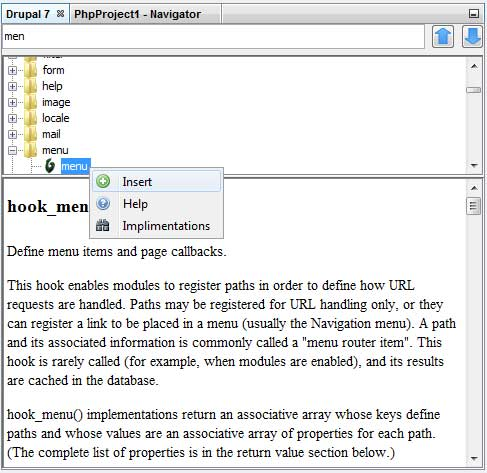

At the heart of NDDT is the API Tree Window. The window is a TopComponent in the world of Netbeans, meaning it can be docked to the numerous regions within your workspace or left as a floating window.
Accessing the window is simple done via the Window menu in Netbeans:
Select the  Drupal API window under the Drupal category and the API window will open:
Drupal API window under the Drupal category and the API window will open:

The API Tree is divided into three sections, quick find, API tree and help. If you know a particular hook and templating function you are looking for you can start typing the name inside the quick find bar. As you type you will be taken to items within the API tree that matches what you have typed. You can also cycle through the matched items by pressing enter or using the navigation buttons to the right of the field.
The API Tree section is the heart of the API Tree. From here you select the items you wish to insert into the currently active file, nicely divided into sections and categories. Double clicking on an item will insert it into the active document at the cursor position, automatically changing the function name to reflect the current module or theme.
Right clicking on items in the API tree will bring up a context menu. The options are very simple. Insert functions the same as double clicking. Help will bring up an external resource for help (generally api.drupal.org). For hooks the Implementations option will show you what files in your Drupal site implements that particular hook (this will be covered more in the Drush section).
The final section of the API Tree is the help section. All hooks have help included with them, which is the same help that appears on api.drupal.org. The help is also contained locally so that you can view help while offline.